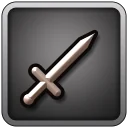

Item
Quickstep Gauntlets
Common offensive item. The holder: +25% attack speed.
+25 attack speed.
That is the wording on the item's card. The sections below are worked out from the item itself and say what happens in play.
As a common item (tier 1) it is offered on rounds 1 and 4. See Loot and items for how offers work.
What it does
The holder: +25% attack speed.
Who can carry it
Any unit you own can hold Quickstep Gauntlets, on the board or on the bench. A unit holds one item at a time.
Equipping it from your inventory sends the unit's current item back to the inventory. Dragging it from one unit to another swaps the two items; the swap is refused if either item would end up on a unit that cannot hold it. See Loot and items.
Your commander can hold it too.
An item does nothing while its holder sits on the bench. Selling the holder returns the item to your inventory.
There is no limit on copies, though an offer shows items you do not own yet before it repeats one.
Other tier 1 offensive items
 Hunter's Edge
Hunter's Edge Ironwood Greatblade
Ironwood Greatblade Runescribed Quill
Runescribed Quill Keen Whetstone
Keen Whetstone Brawler's Wraps
Brawler's Wraps
Barbed DartSee also
- Loot and items: loot rounds, offers, the inventory and equipping.
- Items: every item by tier and kind.
- Item table: every item's bonuses side by side.